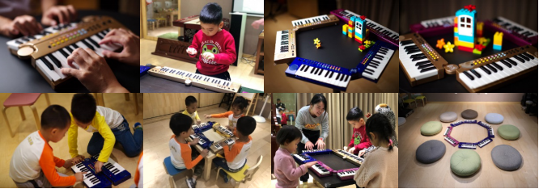
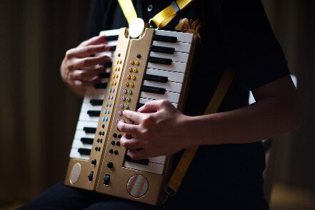
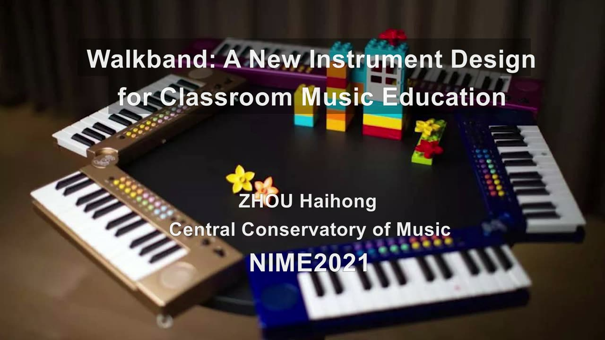

WalkBand - New Musical Instrument for Classroom Music Education
WalkBand - New Musical Instrument for Classroom Music Education
1. PubPub Link
https://nime.pubpub.org/pub/9o8s0ier/draft?access=xhufap3i
2.Conference Abstraction
Due to a great many students and limited space, classroom music education is often achieved through collective teaching and students are usually passive recipients. One-to-many teaching mode leads to little interaction or cooperation between students in class. This teaching mode cannot free students from making natural response to rhythm or music. It focuses on appreciation or solos and hardly involves creation. Indeed, there are problems in the basis of music education – musical instruments, that is, interface. Existing musical instruments are designed for performance instead of education. Moreover, instruments mainly used in Chinese music education for children feature the timbre of western musical instruments, thus obstructing the inheritance and transmission of Chinese music culture.
3.Program Description
WalkBand is designed for musical education to children. It is revolutionized from the start of musical activities so that it can resolve many problems in classroom music education. It is a new and enhanced keyboard instrument with multi-person interactivity, mainly used in basic music education. In terms of gesture control, it retains the control mode of keyboard instruments, supplemented with pitch bend wheel to imitate the sound of Chinese traditional instruments. It also adopts splicing (folding) control which extends the performance forms, from fixed to walking performance and from solo to ensemble, thereby achieving the revolution of classroom music education. The specific features are as follows:
3.1 Interface design
3.1.1 Keyboard instrument with a suitable size for children to play
A keyboard instrument of appropriate size is the key to classroom music education. WalkBand is a small keyboard instrument, whose size and structure comply with children’s ergonomics, enabling the operating ability of human hands being fully exerted. Additionally, the main body of the keyboard can directly reflect the structural relationship of tone rows, being a desire aid for the teaching of staff and music theory.
3.1.2 Keyboard which can be assembled and disassembled in different forms
When WalkBand’s two keyboards are unfolded in a straight line, it can be played as a regular keyboard instrument. The two keyboards can also be folded at any angle within 180 degrees so that two students can learn with one WalkBand. Besides, WalkBand can be assembled for group teaching, which is effective in developing students’ skills in ensembles, collaboration, and listening, as well as improving their interest in learning. Meanwhile, group teaching can imperceptibly cultivate students’ social intercourse ability and collective spirit.


3.1.3 Pitch bend wheel producing the sound with the characteristics of Chinese folk music
It is an important innovation in control method for the new instrument. The WalkBand’s pitch bend wheel, free from the constraint of traditional buttons, realizes the stepless fine-tuning of the pitch in the minor third interval through wheel control. That makes it possible to imitate glide, which is essential to demonstrate the charm of Chinese traditional music.
3.2 Sound
3.2.1 Timbre
WalkBand can produce the sound of common musical instruments, which encourages children to explore the charm of music. Meanwhile, it can make many music education objectives that focus on timbre experience – cultivation of professional music literacy including orchestration, timbre expressiveness, symphonic ensemble and the creation of ensembles – to be pursued during the enlightenment teaching for children. The most popular Chinese musical instruments and western musical instruments are classified by musical instrument families and listed on the upper part of the two keyboards to realize one-key switching of timbres. And the function of timbre broadcast can help young children who cannot read remember the name and timbre of different instruments. The timbre of the two keyboards can also be separately set, which enables a single person to perform a duet. Under the timbre of percussion instruments, each key is a percussion instrument, thus, forming a “percussion ensemble” with one performer and 96 percussion instruments, or an “orchestra” in which a solo, companied by the melody of percussion instruments, is performed.
3.2.2 Strength control
The keyboards of WalkBand can be pressure-sensitive. When the sensing function is turned on, the pressure on each key can be controlled and the music performance is more delicate. When the function is turned off, beginners can play an even sound and the difficulty of strength control is eliminated.
3.3 Gesture control
3.3.1 Walking performance
The change from fixed performance to walking performance is crucial for children’s music education, especially classroom education. Because WalkBand can be folded up and placed on the performer’s chest, playing the WalkBand in this way enhances the flexibility and dramatic effect of performance. It also expands the instrument’s usage scenarios. For active kids, walking performance allows them to use the instrument at anytime and anywhere, which extends the time that children spend on the instrument, increases the motivation for children to learn the musical instrument, and makes up for the shortcomings of existing electronic pianos and electric pianos that require fixed space and cannot be moved around during performance. Without the requirement for fixed space, WalkBand allows a whole class of students, especially those from schools or kindergartens without enough classrooms, to play the instrument.


3.3.2 Separate setting
With octave expansion buttons, the range of the keyboard can be expanded from 4 octaves to 6 octaves. Raising the bass keyboard by one octave and lowering the treble keyboard by one octave will make the two keyboards in the same range, which makes it possible for two students to share one WalkBand to complete the same task assigned by their teacher. The separate setting turns one instrument into two instruments, so the number of WalkBand just needs to be half of the number of students that every student has instruments during classroom instrument teaching.
3.3.3 Multi-track recording and editing
WalkBand also features “multi-track recording”. Students can create multi-track music works by themselves to complete their own “symphony”.
Given the gesture control and sound characteristics, WalkBand is an ideal classroom musical instrument that can be used for music performance, creation, appreciation, and music theory teaching. It provides unlimited possibilities for music education and makes up the deficiencies of existing musical instruments for enlightenment education. It is an enlightenment musical instrument, as well as an ideal and new instrument for classroom. It will surely bring about an all-round change in music education from objectives to methods.
4. Media

▶